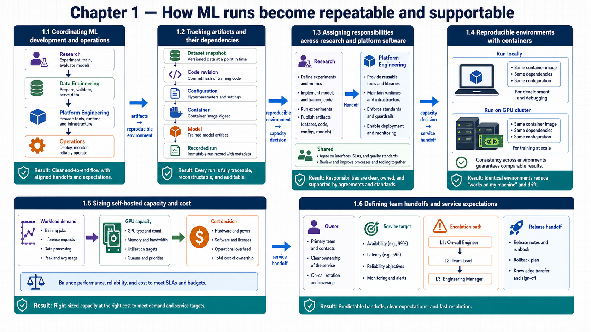

1 Making ML runs reproducible
Which information and responsibilities make training or serving repeatable? The introduction established that production adds shared resources, failure, and evidence requirements. The artifacts, responsibility split, and infrastructure choices together turn an ad-hoc run into a repeatable system.
The three panels connect reproducible artifacts to the people, platform, and capacity decisions that carry a model into a running service.
Chapter map
1.1–1.3 Operating Model & Artifact Lineage: Define the 4 contributing engineering disciplines, 7 core artifact types, and platform infrastructure boundaries.
1.4 Container Packaging: Package Python runtimes, CUDA libraries, and model weights into reproducible, immutable OCI container images.
1.5–1.6 Platform Economics & Service Contracts: Evaluate Total Cost of Ownership (TCO) and replica capacity curves, and formalize operational handoffs and service contracts across teams.

1.1 Coordinating ML development and operations
One experimental run proves that code can run once. The unresolved problem is making the same intent repeatable for other people, machines, and dates. The lifecycle and the engineering disciplines around it provide the starting point.
Machine Learning Operations (MLOps). the combined engineering practice for automating, operating, measuring, and scaling training, inference, and data pipelines.
MLOps does not replace machine learning research. It creates a controlled path around research: inputs are identifiable, compute is requested explicitly, outputs are stored with lineage, deployments are reversible, and production evidence can be turned into the next evaluation or training case.
Four disciplines contribute different guarantees to that path:
- Machine learning: defines the model, objective, data meaning, and quality measurements.
- Software engineering: turns experimental logic into testable packages, APIs, and maintainable interfaces.
- Data engineering: moves, validates, transforms, and retains the records that training and evaluation consume.
- DevOps and platform engineering: provisions compute, deploys services, isolates tenants, observes failures, and automates recovery.
System principle
The production unit is more than a weight file. It is a versioned bundle of code, data definitions, model artifacts, runtime configuration, infrastructure assumptions, and evaluation evidence.
If one ingredient changes without a new identity, the team cannot reproduce the behavior or roll it back deterministically.
1.2 Tracking artifacts and their dependencies
The MLOps mission now has four contributing disciplines. Coordination still fails when their outputs live as unnamed local files or remembered commands. Explicit artifact types and immutable input-output links make every transformation traceable.
Artifact. a stored, addressable output whose identity can be linked to the code, configuration, and inputs that produced it.
A minimal artifact chain for an ML system contains the following owned objects:
- Source revision: a commit or immutable source package that identifies executable logic.
- Environment: a container image or locked dependency set, including the CUDA and framework versions that affect numerical behavior.
- Dataset snapshot: a versioned collection plus schema, filters, splits, and data-quality evidence.
- Run configuration: hyperparameters, random seeds, hardware assumptions, resource requests, and feature flags.
- Checkpoint: model and optimizer state saved at a known training step, together with compatible code and configuration.
- Evaluation record: dataset version, evaluator version, raw outputs, aggregate metrics, and important slices.
- Serving bundle: weights, tokenizer, engine image, prompt/template defaults, runtime settings, and release gates.
Lineage is the directed relationship between these objects. A metric points to exact evaluation outputs; the outputs point to model and dataset versions; and a deployment points to the serving bundle that passed its gates. A filename such as model-final-v2.bin carries none of those guarantees.
| Stage | Input identity | Output identity | Evidence to retain |
|---|---|---|---|
| Data preparation | Raw snapshot + transform revision | Curated dataset version | Schema checks, row counts, rejected records |
| Training | Dataset + code + config + environment | Checkpoint version | Loss/throughput traces, hardware, seed |
| Evaluation | Checkpoint + evaluator + cases | Evaluation run | Raw verdicts, slices, aggregate metrics |
| Deployment | Serving bundle + policy | Release version | Performance, quality, safety, rollback gates |
| Operation | Release + live traffic | Telemetry and incidents | Logs, metrics, traces, sampled outcomes |
Worked calculation: reconstructing a failed training run
Observed symptom: The evaluation task reports a missing checkpoint after the training worker exited.
Identity lookup: The run manifest resolves the source revision, image digest, dataset snapshot, configuration hash, worker attempt, and expected checkpoint generation.
Lineage check: The artifact store contains an attempt-scoped temporary file but no committed completion manifest, so the output is not treated as consumable.
Recovery decision: The pipeline retries from the last complete checkpoint with the same immutable inputs, while the failed attempt and its logs remain attached to the run.
Evidence retained: The final record links the failure, retry, checkpoint generation, evaluator result, and release decision without relying on a remembered command.
Conclusion: A failed process becomes diagnosable when every output has an identity and a publication state.
1.3 Assigning responsibilities across research and platform software
Versioned artifacts make work reproducible. The remaining question is how much infrastructure the team manages directly. Managed services, Kubernetes, virtual machines, and bare metal expose progressively more control and responsibility.
Infrastructure responsibility. the division of infrastructure work between the application team and a platform or cloud provider.
Infrastructure choices form a continuum. Serverless execution removes machine management but constrains runtime, networking, accelerators, and customization. Virtual machines and bare metal expose those controls together with patching, scheduling, recovery, and capacity risk.
| Deployment option | Team controls | Provider controls | Best fit |
|---|---|---|---|
| Function | Code and small configuration | Runtime, scaling, hosts, placement | Short stateless tasks and event handlers |
| Managed container/job | Image, command, resources | Host lifecycle and basic scheduling | Batch preprocessing, fine-tuning, simple inference |
| Managed Kubernetes | Pods, services, policies, schedulers | Control-plane availability and base machines | Multi-service platforms and shared GPU clusters |
| Virtual machine | Operating system upward | Physical host and facility | Custom runtimes, dedicated services, specialized networking |
| Bare metal | Full host software and accelerators | Facility and physical access | Maximum performance and unusual topology needs |
Infrastructure responsibility: purpose and limits
Works on: the complete workload
Helps when: delivery speed, custom hardware, isolation, and available support skills point to different options
How it works: required controls narrow the options; the remaining choice determines which infrastructure work stays with the team
Other limits: managed products may lack required multi-step workflows, rich telemetry, networking, or update behavior
Why it matters: the choice affects both workload capability and the amount of infrastructure work the team carries
1.4 Reproducible environments with containers
The deployment option determines who manages the host. The application still needs a portable runtime that behaves the same across development and production. Image construction, registry distribution, and container execution are distinct parts of that runtime path.
Container image. an immutable filesystem and metadata template containing application code, libraries, and its startup command.
Container. a running process created from an image and isolated with operating-system mechanisms while sharing the host kernel.
Registry. a service that stores versioned image layers and supplies them to deployment systems.
A Dockerfile turns declared build inputs into image layers. Stable dependency steps usually precede frequently changing source code, which allows cached layers to be reused. Multi-stage builds keep compilers and source-only dependencies out of the runtime image, reducing transfer time and security exposure.
Code example: A two-stage build produces an immutable runtime image.
FROM python:3.12-slim AS build
WORKDIR /app
COPY pyproject.toml uv.lock ./
RUN pip install uv && uv sync --frozen --no-dev
FROM python:3.12-slim AS runtime
WORKDIR /app
COPY --from=build /app/.venv /app/.venv
COPY src/ ./src/
ENV PATH="/app/.venv/bin:$PATH"
CMD ["python", "-m", "src.service"]Code walkthrough
Build stage: uv sync --frozen --no-dev resolves exactly the locked production dependencies into /app/.venv.
Runtime stage: COPY --from=build transfers the resolved environment without transferring the package manager’s build context or compiler tools.
Application layer: COPY src/ appears late, which lets the slower dependency layer remain cached across ordinary source edits.
Startup command: CMD names the module that the deployment starts; the image digest identifies this complete filesystem and command.
Result: The runtime image contains only the environment and service files required to execute the versioned application.
Limits: The snippet omits a non-root user, health check, vulnerability policy, multi-architecture build, and runtime secret mount; those are deployment requirements, not implied defaults.
Secrets copied into an image or passed through persistent build arguments remain in layer history. Runtime secret mounts and narrowly scoped workload permissions avoid that exposure. Containers share the host kernel, so untrusted or agent-generated code generally requires a stronger sandbox or a microVM.
Architecture compatibility
A laptop with an ARM processor can build an image that will not run on an x86 cloud node.
An explicit target platform, immutable digest, and a test on the production CPU/GPU runtime family establish compatibility.
1.5 Sizing self-hosted capacity and cost
Containers make a runtime portable across deployment options. A large language model adds expensive accelerators, large weight transfers, and ongoing infrastructure work. The service objective determines the capacity assumptions used to compare hosted APIs with self-hosting.
An open model gives control over weights, architecture, fine-tuning, data placement, and runtime. Self-hosting also makes the team responsible for availability, throughput, scaling, security, weight distribution, and evaluation. The decision is therefore not simply price per token: it is a comparison between a provider bill and the full cost of hardware, platform engineering, idle capacity, incidents, and optimization.
\[ C_{\mathrm{total}} = C_{\mathrm{fixed}} + C_{\mathrm{compute}} + C_{\mathrm{storage}} + C_{\mathrm{network}} + C_{\mathrm{operations}} + C_{\mathrm{risk}} - V_{\mathrm{residual}} \tag{1.1}\]
Worked calculation: one-year ownership cost
Fixed commitment: Reserved hardware and platform commitments cost $120,000.
Usage: Compute, storage, and network usage total $205,000.
Operations: On-call, maintenance, and platform engineering allocate $90,000.
Risk and residual: Expected interruption or shortage exposure is $30,000, while recoverable equipment value is $10,000.
Total: The one-year comparison cost is $120,000 + $205,000 + $90,000 + $30,000 − $10,000 = $435,000.
Conclusion: A fair comparison with an API or managed-service alternative uses the same demand, reliability, and quality assumptions.
\[ R_{\mathrm{needed}} = \left\lceil \frac{Q_{\mathrm{peak}}}{Q_{\mathrm{replica}} \cdot u} \right\rceil + R_{\mathrm{redundancy}} \tag{1.2}\]
Worked calculation: replicas for a 60 request-per-second peak
Measured capacity: One serving replica sustains 8 requests/s while meeting the latency target.
Headroom: At 75% normal utilization, an 8 requests/s benchmark yields 6 planned requests/s per replica.
Demand replicas: A 60 requests/s peak divided by 6 planned requests/s requires 10 replicas.
Failure allowance: Two additional replicas cover maintenance or one failed host group.
Starting deployment: Adding 2 spare replicas to the 10 demand replicas produces a 12-replica starting deployment; a load test with the real prompt and output-length mix validates the estimate.
Conclusion: Capacity is a measured property of a serving bundle, not a value inferred from model parameter count alone.
Model quality, prompt length, output length, quantization, engine version, GPU type, batching, and latency objectives all change per-replica capacity. The estimate therefore belongs to one exact serving bundle and is measured again whenever one of those ingredients changes.
1.6 Defining team handoffs and service expectations
The team can now identify artifacts, infrastructure responsibilities, and an initial capacity question. Later chapters name many frameworks and settings that are easy to confuse across layers. A software-responsibility map gives every later mechanism a clear home.
| Layer | Owns | Examples |
|---|---|---|
| Application | Business request, authentication, quotas, safety policy | FastAPI, gateway services |
| Model/runtime | Tensor execution, gradients or token generation | PyTorch, JAX, Transformers |
| Distributed communication | Process groups and GPU collectives | torch.distributed, NCCL |
| Serving engine | Request scheduling, batching, KV cache, kernels | vLLM, SGLang, TensorRT-LLM |
| Orchestrator | Resource placement, retries, desired state | Kubernetes, Slurm, SkyPilot |
| Pipeline engine | Task dependencies, parameters, history | Airflow, Flyte, Kubeflow Pipelines |
| Observability/evaluation | Telemetry, experiments, test cases, judgments | OpenTelemetry, MLflow, W&B, Langfuse |
| Storage/data system | Durability, sharing, retrieval, replication | Object storage, shared FS, vector databases |
A software knob is a configuration option that changes execution without changing the model architecture. gpu_memory_utilization is owned by a serving engine; NCCL_DEBUG is owned by the NCCL communication library; a Kubernetes GPU resource request is owned by the orchestrator. Naming the owner prevents a setting from being recommended where it has no effect.
Handoff record
A training team hands over a serving bundle only when the window, accountable owner, escalation path, release identity, rollback target, and evidence links are recorded.
The receiving team can then answer what changed, which checks passed, who can stop the rollout, and which known-good version is restored if a gate fails.
Chapter 1 summary
Core mechanisms: Immutable OCI container packaging with CUDA runtimes; explicit artifact lineage across 7 core types; TCO and replica capacity modeling.
Governing tradeoffs: Container build isolation vs. local debugging agility; self-hosted GPU infrastructure fixed costs vs. managed API variable latency.
Failure modes & defenses: Rejection of unversioned ad-hoc dependencies; formal service contracts and operational handoff checklists.
Carry-forward result
The operating model now contains immutable artifacts, clear infrastructure and isolation responsibilities, an initial capacity method, and a software responsibility map.
The next chapter applies that model to a training run whose memory and elapsed time exceed one GPU.